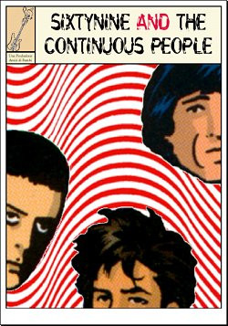

|
|
Home - Discography - Reviews - Flyers - Sounds |
| "Sixty who?" - an epitaph: Sixtynine and the Continuous People liked to play Dan Treacy's little works of art. They really did and that's what they did best. When they climbed on stage and they heard Daniel's music coming out from their own hands, they felt really good. They formed in the cold winter of 1998 (with no previous band experience) because they felt the need to play the tunes they loved. They started playing gigs, they recorded a couple of live demos and contributed to an obscure indie comp or two. They were rather happy. Then one day (probably a cold winter one) they were asked to contribute an original song to a nice compilation (which featured the Television Personalities as well, the world is small) so they started to write their own stuff. Which eventually landed them a deal for a snappy 7" with Hamburg's hippest label, Felicite. After two hectic years, in (the cold winter of) 2004 they burned out and split up. Nobody told them though, so they kept on rehearsing regularly. Which was good, because when they were booked for more gigs in 2005 they were already all set. But, alas, it was not to last: in the summer of 2006 they suddenly realized it was over and they amicably parted ways. Wanna contact us? Nice! You can write at the following address: |
 |
| |